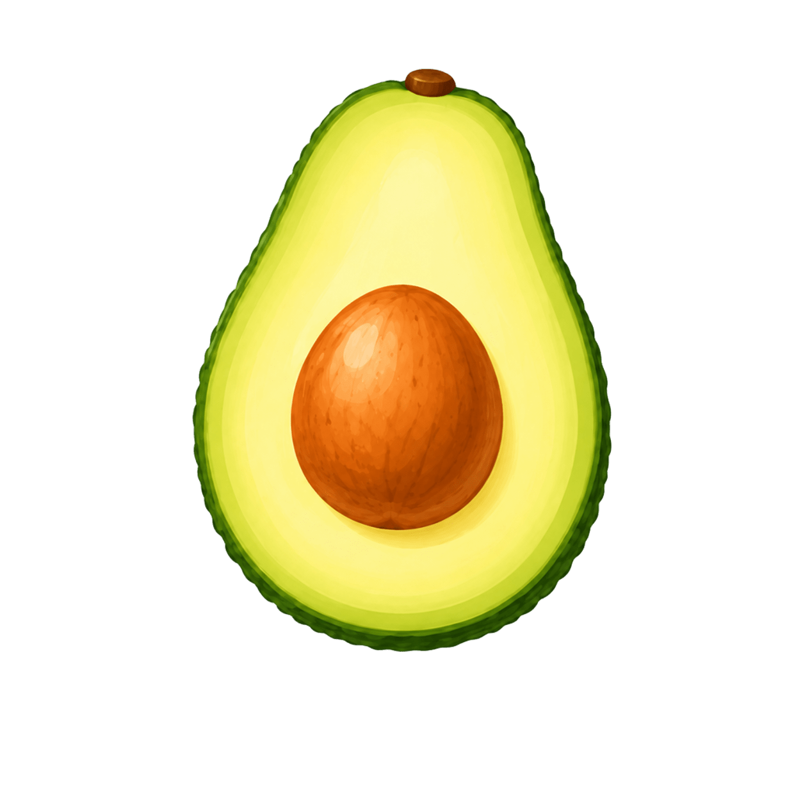

حالتهای عمومی و سیستمی
نمونههای قابل استفاده برای خطا، آفلاین، permission و صفحات بدون داده.

صفحه ۴۰۴
این مسیر در آووکادو پیدا نشد.
رفتن به امروزخطای اینترنت
اتصال کامل نیست. ثبتهای محلی محفوظ میمانند.
خطای سرور
دریافت اطلاعات کامل نشد. بعداً دوباره تلاش کنید.
حالت آفلاین
میتوانید ثبتهای امروز را ادامه دهید؛ همگامسازی بعداً انجام میشود.
موفقیت
مورد تازه ذخیره شد و در مقصد مربوطه دیده میشود.
بدون داده
برای نمایش این بخش چند ثبت دیگر لازم است.
تعمیرات
بخشی از سرویس در حال بهروزرسانی است. دادههای شما محفوظ است.
اجازه دوربین
برای ثبت غذا با عکس، اجازه دوربین لازم است.
اجازه اعلانها
برای یادآوری آب، تمرین و دارو از اعلان استفاده میشود.
اجازه فایلها
برای بارگذاری PDF یا تصویر برنامه، دسترسی فایل لازم است.